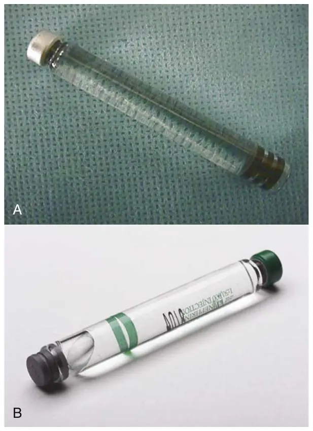

نسخه استخراجشده؛ ترجمه یا تأیید علمی انجام نشده است. وضعیت: captured
در مطبی که تازه در آن کار میکنی، کارپولها در ظرفی شیشهای کنار پنجرهی آفتابگیر ماندهاند و دستیار صبحها آنها را در گرمکن لامپی میگذارد تا «به دمای بدن برسند». کدام عادت را باید عوض کنی؟
اگر ذخیرهی روزانه را در ظرف جداگانه میچینی، کارپولها را با کلاهک رو به پایین روی دو سه گاز استریل بگذار که با الکل مرطوب شدهاند، نه غوطهور؛ مایع الکل نباید دور کارپول بماند. کارپول را هرگز در الکل یا محلول ضدعفونی خیس نکن: مایع ظرف یک روز از دیافراگم نیمهتراوا وارد کارپول میشود، تزریق را میسوزاند و الکل غلیظ ممکن است پارستزی بدهد.
اگر کارپول در دهان بیمار شکست، دهان را کامل ساکشن کن و پیش از ترخیص بیمار با پزشک یا اورژانس دربارهی پیگیری مشورت کن؛ بلعیدن شیشه ممکن است آسیب جدی بدهد.
